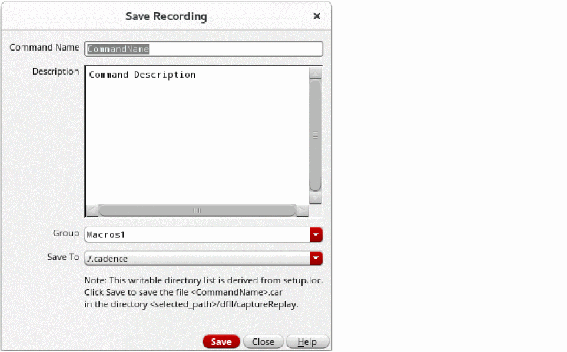

Recording Your Actions in a Design
To record your actions in the current design window by using the Capture and Replay assistant in Layout EXL or a higher tier:
- Before you can start recording, ensure that you exit any currently active command.
-
From the menu bar in your layout design, choose Windows – Assistants – Capture and Replay.
The Capture and Replay assistant is displayed.
-
Click Start recording
.
This is a toggle button, which now switches to Stop recording . The term Recording appears on the status banner.
. The term Recording appears on the status banner. - Perform the actions you want to capture.
-
Click Stop recording
 .
.
The recording is stopped and the Save Recording form appears.
 - Specify the name of the recording in the Command Name field.
- Add a description of your recording in the Description field.
-
Select a group or enter a group name in Group.
Groups allow you to categorize your recordings. -
From the Save To list, select a location to save your recording.
The list of locations is derived fromsetup.loc. Your recording is saved with the.carextension under thedfII/captureReplaydirectory at the selected location. -
Click Save.
The saved recording is listed in the assistant.
A recording operation is canceled if you close the current layout window during the recording.
If Capture and Replay assistant gets closed during the recording due to any reason, for example while switching to another workspace, you need to invoke the assistant again or use the leCARStopCapture SKILL function to stop and save the recording.
Related Topics
Capture and Replay Your Design Actions
Replaying Your Recorded Actions in a Design
Deleting a Recording in the Capture and Replay Assistant
Return to top